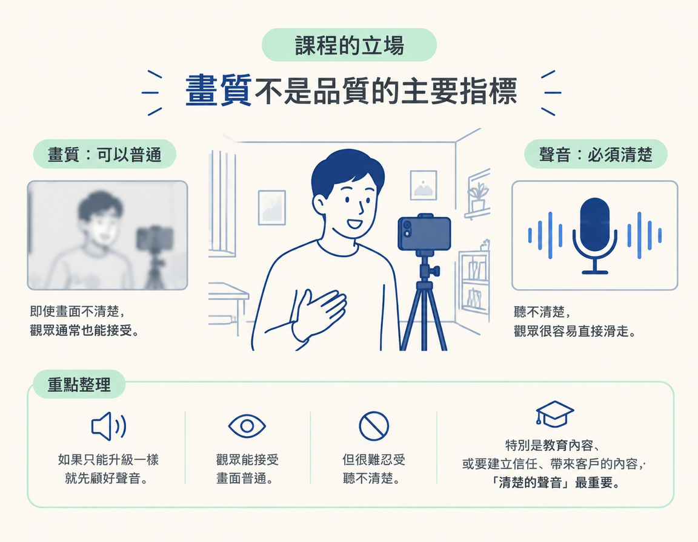
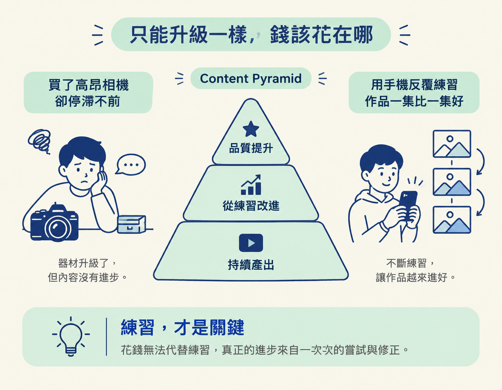

了解為什麼手上的手機已經夠用，以及為什麼如果要先投資一樣器材，應該優先改善聲音。
打開購物網站，你在「手機拍片夠不夠」和「是不是該買一台相機」之間猶豫不決。評測影片一支接一支，感光元件、光圈、對焦速度……看著看著，你好像覺得沒有一台像樣的相機，就不好意思開始做內容。結果影片一支都沒拍，購物車倒是加了三台。
這一節要先拆掉這個卡點。這一步是開始錄內容前的器材判斷：手邊有一支手機，就有了開始錄影的工具；接下來要做的選擇，是把注意力和預算先放在聲音，而不是畫質。這樣你就能先開始錄，不必等到買齊器材才動手。
很多人以為「內容做得好不好」等於「畫面拍得漂不漂亮」，所以一開始就想把預算花在鏡頭和相機上。但課程指出，現在的內容環境裡，畫質早就不是判斷品質的主要指標。影響觀眾會留下來，還是直接滑走的，往往是他聽不聽得清楚。
課程用一句話說明優先順序：如果只能升級一樣東西，就先顧好聲音。觀眾通常可以接受畫面普通，卻很難忍受聽不清楚；一旦聽不清楚，就可能直接滑走。尤其是教育型內容，或是希望透過內容建立信任、帶回客戶的內容，課程認為最重要的要求就是「清楚的聲音」，其他都可以先放一旁。

你可能會想：「講師用專業設備，當然會說手機夠。」但課程講師坦承，他早期那批 TikTok 內容，用的只是一支比較舊的 Google Pixel 手機；以當時要發布的內容來說，成品已經夠用了。他也提到，只要你有在接觸 AI 這個圈子，現在手上的手機就足以錄製內容。
換句話說，手機不必將就，它已經夠用。現在最需要的不是更多器材，而是按下錄影鍵，開始練習。
把幾種常見想法攤開來比較，優先順序就清楚了：
| 你現在的想法 | 課程的立場 | 為什麼 |
|---|---|---|
| 先買一台好相機 | 先用手機就好 | 畫質不是品質的主要指標，現有的手機已足以錄製內容 |
| 有預算就換鏡頭、升級畫質 | 有預算就先把聲音弄清楚 | 觀眾聽不清楚就可能滑走，畫面再好也留不住人 |
| 器材決定內容好壞 | 練習次數決定內容好壞 | 真正拉開差距的是持續練習，不是設備 |
最後一列，正好把這個觀念接回前面模組提過的 Content Pyramid。它是一個用來理解內容如何逐步變好的框架：先累積產出，再從練習中改進，品質才會跟著提升。真正讓第五支影片比第一支更好的，是你中間多練了好幾次，而不是換了器材。這也說明課程為什麼不急著叫你花錢：花錢無法代替練習。

課程的立場是：不必急著買新相機，手上的手機就夠用。畫質不是內容品質的主要指標；觀眾聽不清楚，就可能直接離開。對教育型、希望建立信任的內容來說，清楚的聲音是首要要求。所以如果只能升級一樣器材，就先投資聲音。真正拉開差距的是持續練習，也就是 Content Pyramid 裡的產出量與改進。
器材這一關先釐清了：手機可以開始錄製，聲音則是優先顧好的部分。下一節會介紹 OBS，一套免費、能同時錄螢幕和鏡頭，也可以交給你的 agent 操控的軟體。